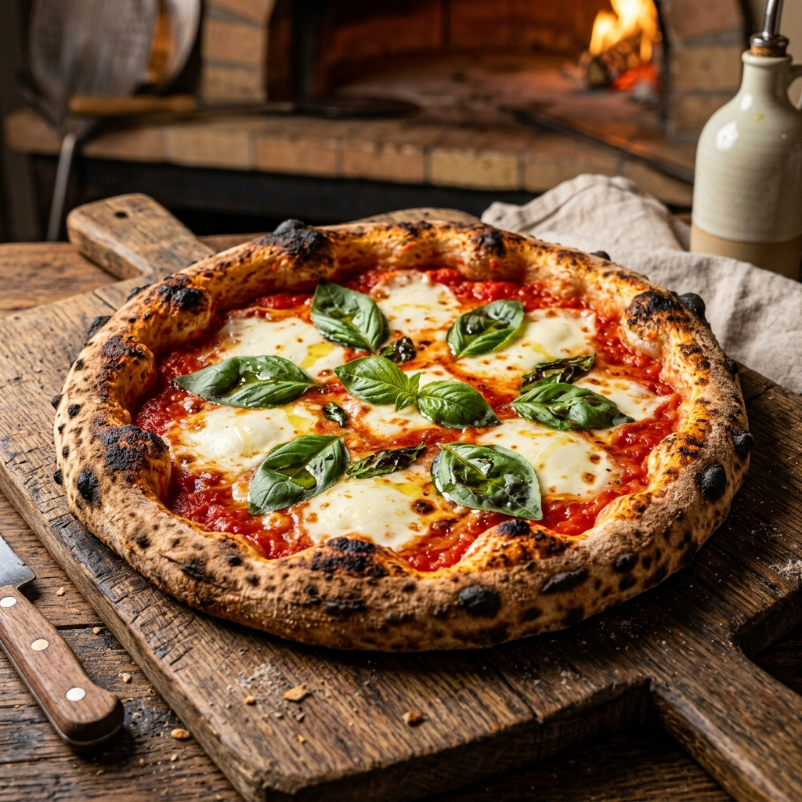

Hand-stretched slow-rise 48-hour sourdough crusts baked in our 450°C stone-hearth deck ovens. Crispy exterior, airy interior crumb.

01A study in simplicity. Sweet Italian San Marzano tomato passata, melted buffalo mozzarella pearls, fresh torn green basil leaves, and a generous drizzle of cold-pressed extra virgin olive oil over our 48-hour slow-fermentation crust.
Spicy Calabrian soppressata salami, bubbly fresh mozzarella, and parmigiano reggiano, finished with a generous post-bake drizzle of organic wild honey from Maharashtra infused with red chilis.
A white base study of four premium cheeses: blue gorgonzola dolce, taleggio, buffalo mozzarella, and aged parmigiano reggiano. Finished with fresh rosemary needles and cracked black pepper.
Sautéed wild forest porcini and button mushrooms, creamy goat cheese, mozzarella, and a drizzle of rich white truffle oil. Finished with fresh peppery baby arugula tossed in lemon juice.